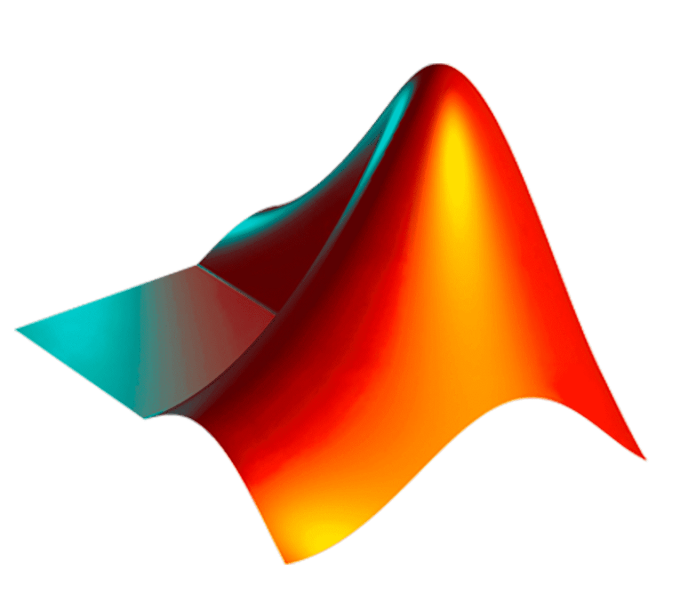

Образование
МГТУ им. Н.Э. Баумана, студентка 3 курса
Направление: 01.03.04 – Прикладная математика (бакалавриат)
Привет 👋 Меня зовут
Javascript разработчик
МГТУ им. Н.Э. Баумана, студентка 3 курса
Направление: 01.03.04 – Прикладная математика (бакалавриат)
Исследование устойчивости механической системы в условиях параметрического резонанса
Создание системы автоматической проверки правильности работы программ на C++
Оптимизация длины траектории на триангулированной поверхности
 |
 |
|---|---|
 |
 |
 |
|---|---|
Почта: mariya.a.erofeeva@gmail.com